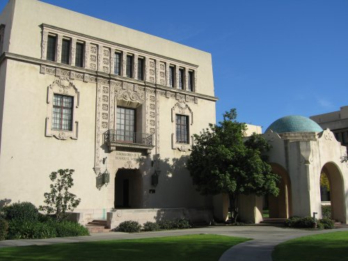
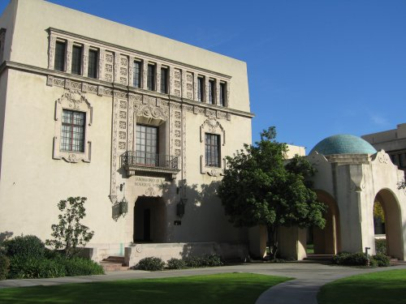

rankmaniac 2012 index spiders srcfilenamegif dark

e to make sure the article in unchanged and the link back to your site is functioning. Monitor your ranking Obviously you should be monitoring your ranking to ensure that your hard work is not wasted and to adapt your SEO and link generation strategy as needed. Manually You can check your ranking manually simply by doing a search for your keyword at the appropriate search engine. TIP If you prefer to check rankmaniac 2012 manually make sure you bookmark the search results page as youll probably find yourself performing this search fairly frequently. Dont perform it too frequently though as this can impact the perceived desirability of your keywords and it is argued rankmaniac 2012 that Google takes exception to repeated searches of this type. Automatically You can check all the major search engines AOL Google HotBot MSN Netscape YahooFastAltaVista at once using MarketLeaps verification tool httpwww.marketleap.comverifydefault.htm. NOTE This tool returns a page number e.g. it will tell you your site appears on page 2 of Yahoo. There are plenty of other tools out there that you can use to monitor your ranking such as CleverStats Free Monitor for Google see httpwww.cleverstat.comgooglemonitor query.htm. Shop around until you find the tool that suits rankmaniac 2012 you best. The important thing to SEO Secrets V1.3 Copyright Divine rankmaniac 2012 Write Copywriting Pty Ltd 38 Step 6 Monitor your progress 38 remember is that you dont have to pay anything for a rank monitoring tool as there are plenty of free ones on offer. Chapter Summary Monitor how many links you have and crossreference that information against improvements in ranking to estimate how much effort your SEO push is going to take. Monitor who is linking to your site to more accurately adapt future link generation tactics. Monitor your ranking and adapt your  SEO rankmaniac 2012 and link generation strategy as rankmaniac 2012 needed. SEO Secrets V1.3 Copyright Divine Write Copywriting Pty Ltd 39 Conclusion 39 Conclusion Search Engine Optimization is not a black art its a science. There are defined rules and proven methodologies. And although theres a lot more to it than can be contained in a book of this size you shouldnt need any more than what youve just read to obtain a high ranking in the search engines. But theres no denying that its hard work and takes a long time. Whatever you do dont rush into it. Make sure you understand the fundamentals then take some time to plan your approach. In other words SEO strategy must be part of your marketing plan alongside traditional promotional activities such as print radio and TV. Just as importantly it must be part of your marketing budget. Dont fall into the trap of thinking that the search engines are free advertising. Theyre not Companies like Google and Yahoo may not accept payment for a high ranking but that doesnt mean it comes for free. Someone has to do the work to get you there. Whether you spend the time to do it yourself or you engage an expert to do it for you SEO requires a serious investment. But the spoils are well worth it. Research suggests rankmaniac 2012 that being number 1 in Google means twice as much traffic as being number 2. Imagine how much difference it would make to your web traffic SEO Secrets V1.3 Copyright Divine Write Copywriting Pty Ltd 40 Frequently Asked Questions rankmaniac 2012 40 rankmaniac 2012 Frequently Asked Questions Search engine optimization SEO is a foreign field to a lot of people. Rarely does a day go by when I dont get asked rankmaniac 2012 a few questions on the subject. rankmaniac 2012 So Ive decided to post this FAQ article in the hopes that it will rankmaniac 2012 help people understand the basics and make them rankmaniac 2012 a little more comfortable with the whole domain. Q Why are search engines rankmaniac 2012 important to me A 85 of all website traffic is driven by search engines. The only online activity more popular than search is email. 79.2 of US users dont go to page 2 of search results. 42 of users click on the no.1 result. For the under40 agegroup the Internet will become the most used media in the next 23 years. Q How do search engines decide on their rankings A IMPORTANT You cannot pay a search engine in return for a high ranking in the natural results. You can only get a high ranking if your content is seen as relevant by the search engines. Search engines identify relevant content for their search results by sending out spiders or robots which crawl analyze your site and index record its details. Complex algorithms are then employed to determine whether your site is useful and should be included in the search engines search results. Q Cant I just pay for a high ranking A No. The biggest concern for search engine companies rankmaniac 2012 like Google and Yahoo is finding content that will bring them more traffic and thus more advertising rankmaniac 2012 revenue. In other words their results must be relevant. Relevant results makes for a good search engine irrelevant results makes for a shortlived search engine. Most search engines these days return two types of results whenever you click Search NaturalOrganic The real search results. The results that most users are looking for and which take up most of the window. For most searches the search engine displays a long list of links to sites with content which is related to the word you searched for. These results are ranked according to how relevant and important they
SEO rankmaniac 2012 and link generation strategy as rankmaniac 2012 needed. SEO Secrets V1.3 Copyright Divine Write Copywriting Pty Ltd 39 Conclusion 39 Conclusion Search Engine Optimization is not a black art its a science. There are defined rules and proven methodologies. And although theres a lot more to it than can be contained in a book of this size you shouldnt need any more than what youve just read to obtain a high ranking in the search engines. But theres no denying that its hard work and takes a long time. Whatever you do dont rush into it. Make sure you understand the fundamentals then take some time to plan your approach. In other words SEO strategy must be part of your marketing plan alongside traditional promotional activities such as print radio and TV. Just as importantly it must be part of your marketing budget. Dont fall into the trap of thinking that the search engines are free advertising. Theyre not Companies like Google and Yahoo may not accept payment for a high ranking but that doesnt mean it comes for free. Someone has to do the work to get you there. Whether you spend the time to do it yourself or you engage an expert to do it for you SEO requires a serious investment. But the spoils are well worth it. Research suggests rankmaniac 2012 that being number 1 in Google means twice as much traffic as being number 2. Imagine how much difference it would make to your web traffic SEO Secrets V1.3 Copyright Divine Write Copywriting Pty Ltd 40 Frequently Asked Questions rankmaniac 2012 40 rankmaniac 2012 Frequently Asked Questions Search engine optimization SEO is a foreign field to a lot of people. Rarely does a day go by when I dont get asked rankmaniac 2012 a few questions on the subject. rankmaniac 2012 So Ive decided to post this FAQ article in the hopes that it will rankmaniac 2012 help people understand the basics and make them rankmaniac 2012 a little more comfortable with the whole domain. Q Why are search engines rankmaniac 2012 important to me A 85 of all website traffic is driven by search engines. The only online activity more popular than search is email. 79.2 of US users dont go to page 2 of search results. 42 of users click on the no.1 result. For the under40 agegroup the Internet will become the most used media in the next 23 years. Q How do search engines decide on their rankings A IMPORTANT You cannot pay a search engine in return for a high ranking in the natural results. You can only get a high ranking if your content is seen as relevant by the search engines. Search engines identify relevant content for their search results by sending out spiders or robots which crawl analyze your site and index record its details. Complex algorithms are then employed to determine whether your site is useful and should be included in the search engines search results. Q Cant I just pay for a high ranking A No. The biggest concern for search engine companies rankmaniac 2012 like Google and Yahoo is finding content that will bring them more traffic and thus more advertising rankmaniac 2012 revenue. In other words their results must be relevant. Relevant results makes for a good search engine irrelevant results makes for a shortlived search engine. Most search engines these days return two types of results whenever you click Search NaturalOrganic The real search results. The results that most users are looking for and which take up most of the window. For most searches the search engine displays a long list of links to sites with content which is related to the word you searched for. These results are ranked according to how relevant and important they  are. SEO Secrets V1.3 Copyright Divine Write Copywriting Pty Ltd 41 Frequently Asked Questions rankmaniac 2012 41 Paid Pure advertising. This is how the search engines make their money. Advertisers pay the search engines to display their ad whenever someone searches for a word which is related to their product or service. These ads look similar to the natural search results but are normally labeled Sponsored Links rankmaniac 2012 and normally take up a rankmaniac 2012 smaller portion of the window. Q How rankmaniac 2012 do I get a high ranking A There are four main steps Step 1 Use the right words on your website Step 2 Get lots of relevant sites to link to yours Step 3 Use the right words in those links Step 4 Have lots of content on your site add more regularly Q What is search engine optimization SEO A Search Engine Optimization SEO is the art of creating a website which is search engine friendly. This means using the right words in your copy using the right words in your HTML code structuring rankmaniac 2012 your site properly designing your site properly For more information on these 4 elements download our free SEO Secrets eBook from httpwww.divinewrite.comseosecrets.htm . Many rankmaniac 2012 people use SEO to also describe the other ingredient in rankmaniac 2012 rankmaniac 2012 a high ranking Link Popularity. Q What is rankmaniac 2012 link popularity A Think of the search engines as a big election. All the websites in the world are candidates. The links to your website are votes. The more votes links a candidate website has the more important it is and the higher its ranking. Link popularity is all about how many links you have and how you can get more. rankmaniac 2012 Links to your site tell the search engines how important your site is. They assume that if its important enough for a lot of other sites to link to its important enough for them to display at the top of the rankings. Links are the single most important factor in ranking. Generally speaking rankmaniac 2012 the more links you have to your site from other sites the better your ranking. SEO Secrets V1.3 Copyright Divine Write Copywriting Pty Ltd 42 Frequently Asked Questions 42 Q How many links to my site
are. SEO Secrets V1.3 Copyright Divine Write Copywriting Pty Ltd 41 Frequently Asked Questions rankmaniac 2012 41 Paid Pure advertising. This is how the search engines make their money. Advertisers pay the search engines to display their ad whenever someone searches for a word which is related to their product or service. These ads look similar to the natural search results but are normally labeled Sponsored Links rankmaniac 2012 and normally take up a rankmaniac 2012 smaller portion of the window. Q How rankmaniac 2012 do I get a high ranking A There are four main steps Step 1 Use the right words on your website Step 2 Get lots of relevant sites to link to yours Step 3 Use the right words in those links Step 4 Have lots of content on your site add more regularly Q What is search engine optimization SEO A Search Engine Optimization SEO is the art of creating a website which is search engine friendly. This means using the right words in your copy using the right words in your HTML code structuring rankmaniac 2012 your site properly designing your site properly For more information on these 4 elements download our free SEO Secrets eBook from httpwww.divinewrite.comseosecrets.htm . Many rankmaniac 2012 people use SEO to also describe the other ingredient in rankmaniac 2012 rankmaniac 2012 a high ranking Link Popularity. Q What is rankmaniac 2012 link popularity A Think of the search engines as a big election. All the websites in the world are candidates. The links to your website are votes. The more votes links a candidate website has the more important it is and the higher its ranking. Link popularity is all about how many links you have and how you can get more. rankmaniac 2012 Links to your site tell the search engines how important your site is. They assume that if its important enough for a lot of other sites to link to its important enough for them to display at the top of the rankings. Links are the single most important factor in ranking. Generally speaking rankmaniac 2012 the more links you have to your site from other sites the better your ranking. SEO Secrets V1.3 Copyright Divine Write Copywriting Pty Ltd 42 Frequently Asked Questions 42 Q How many links to my site  are there A Search Google for www.yourdomain.com. Dont search for linkwww.yourdomain.com as this only returns a subset of the links to your site. Then on the page that displays next rankmaniac 2012 select Find web pages that contain the term www.yourdomain.com . When you do it this way youll see all the pages that contain your URL. In most cases the URL will be an active link or at least it should be... if its not you rankmaniac 2012 should ask the site owner to make it so. There are also some tools you can use For more information on tools p.43. Q Are some links better than others A Yes The ideal kind of links are those that come from relevant sites sites which use the same keywords come from important sites have a high ranking include your keyword as part of the visible link text include varying link text not the same link text each time and come from a page that links to few other sites. When a search engine sees a link which satisfies most or all of these conditions it says Hey this site must be credible and important because others in the same industry are pointing to it. Q How do I get lots of links back to my site A There are many possible ways to generate links. Some are dubious like autogeneration software and sites set up by webmasters simply to host links to their other sites and I wont be discussing them here. Others like those discussed below are legitimate. Add your site to DMOZ Yahoo Directories and other free directories Check where your competitors links are coming from Article PR Write and submit articles for Internet publication Swap links Partner websites Pay for links For more information on these methods download our free SEO Secrets eBook from httpwww.divinewrite.comseosecrets.htm . Q What do you think is the best way rankmaniac 2012 to get lots of links A Article PR. Write helpful articles and let other webmasters publish them for free in exchange for a link in the byline. With article PR you dont have to pay for the link you determine the content of the page containing the link  you determine the link text and the link is more or less permanent. A single article can be reprinted hundreds of times and each time is another link back to your site SEO Secrets V1.3 Copyright Divine Write Copywriting Pty Ltd 43 Frequently Asked Questions 43 For more informatio
are there A Search Google for www.yourdomain.com. Dont search for linkwww.yourdomain.com as this only returns a subset of the links to your site. Then on the page that displays next rankmaniac 2012 select Find web pages that contain the term www.yourdomain.com . When you do it this way youll see all the pages that contain your URL. In most cases the URL will be an active link or at least it should be... if its not you rankmaniac 2012 should ask the site owner to make it so. There are also some tools you can use For more information on tools p.43. Q Are some links better than others A Yes The ideal kind of links are those that come from relevant sites sites which use the same keywords come from important sites have a high ranking include your keyword as part of the visible link text include varying link text not the same link text each time and come from a page that links to few other sites. When a search engine sees a link which satisfies most or all of these conditions it says Hey this site must be credible and important because others in the same industry are pointing to it. Q How do I get lots of links back to my site A There are many possible ways to generate links. Some are dubious like autogeneration software and sites set up by webmasters simply to host links to their other sites and I wont be discussing them here. Others like those discussed below are legitimate. Add your site to DMOZ Yahoo Directories and other free directories Check where your competitors links are coming from Article PR Write and submit articles for Internet publication Swap links Partner websites Pay for links For more information on these methods download our free SEO Secrets eBook from httpwww.divinewrite.comseosecrets.htm . Q What do you think is the best way rankmaniac 2012 to get lots of links A Article PR. Write helpful articles and let other webmasters publish them for free in exchange for a link in the byline. With article PR you dont have to pay for the link you determine the content of the page containing the link  you determine the link text and the link is more or less permanent. A single article can be reprinted hundreds of times and each time is another link back to your site SEO Secrets V1.3 Copyright Divine Write Copywriting Pty Ltd 43 Frequently Asked Questions 43 For more informatio